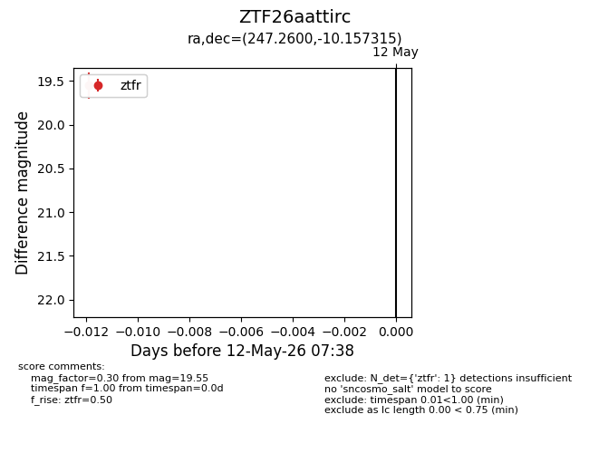
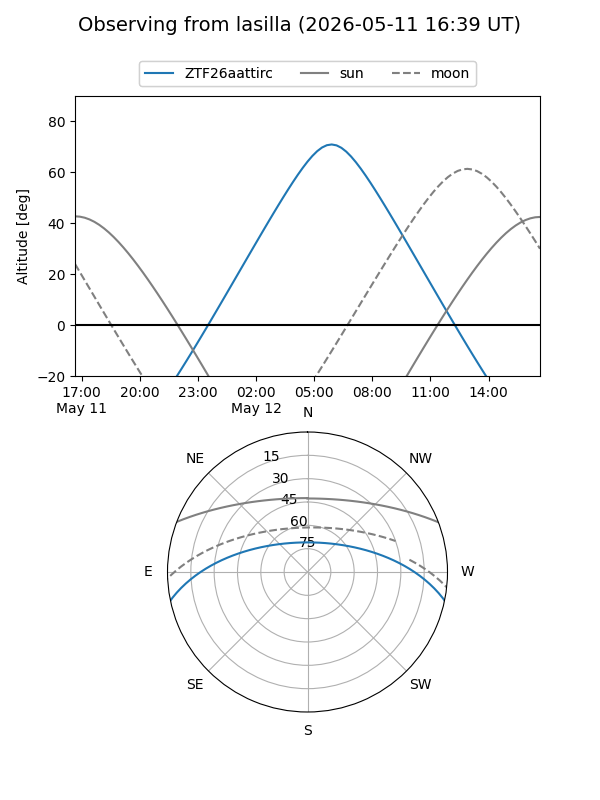
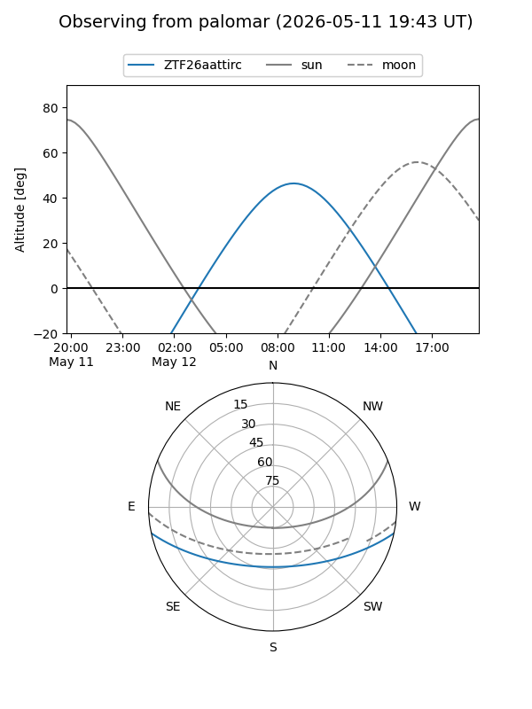

ZTF26aattirc
Target ZTF26aattirc at 2026-05-12 07:41
Aliases and brokers:
FINK: link
Lasair: link
ALeRCE: link
alt names
ZTF26aattirc (ztf,fink_ztf)
Coordinates:
equatorial (ra, dec) = 247.2600,-10.15731
equatorial (HMS+DMS) = 16:29:02.39,-10:09:26.33
galactic (l, b) = (5.3428,+25.43857)
Flags:
Photometry:
last ztfr=19.55
1 ztfr detections
Lightcurve

Visibility


Additional plots